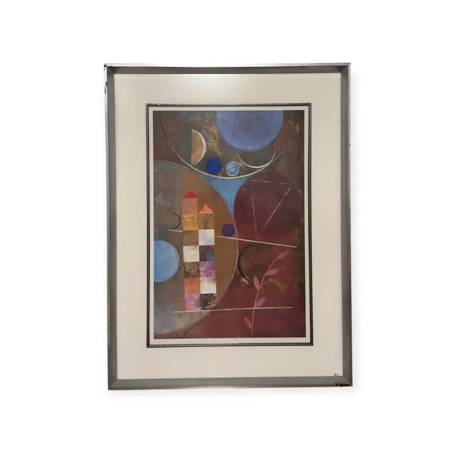
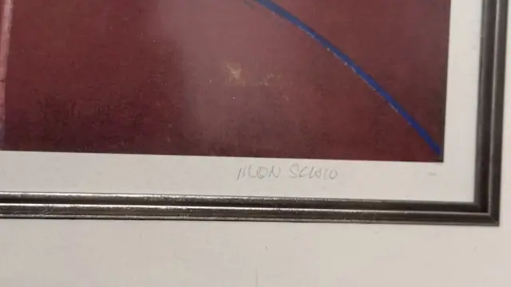
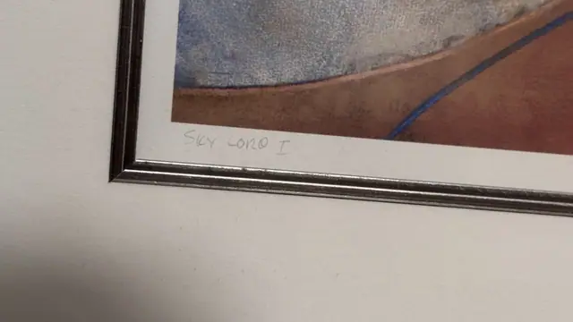
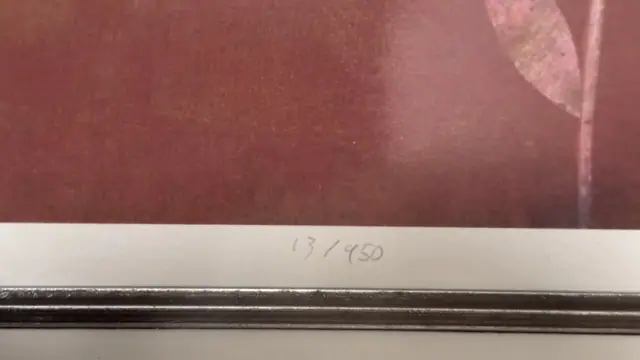
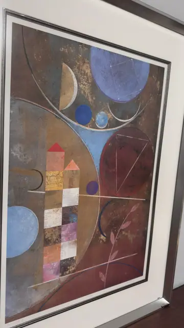
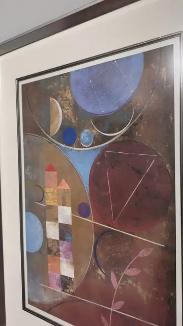

Paintings & Prints
Sky Lore I, Signed Limited Edition Print, MON SCHIO, Numbered Edition, Framed
MON SCHIO · 1980s-1990s
Price Upon Request






About the Item
MON SCHIO. A large lavender-blue disc sits top right beside a pale crescent and a small cobalt dot, while below a great oxblood circle and a soft blue arc balance the design. At the centre a slim chequered column in pink, cream and gold rises to a red gabled cap, crossed by fine horizontal rules and a delicate stem with leaves. The ground is a rich mottled bronze flecked with gold and mauve, and the whole is drawn with light silver linework. First in the numbered series; pencil signed, titled and numbered in the bottom margin. Medium: serigraph or lithograph on paper. Signed lower centre margin, in pencil, reading "MON SCHIO". Edition: 13/450. Inscribed on the reverse or mount: MON SCHIO; SKY LORE I; 13/450. Condition: Clean bright sheet with no visible foxing or waviness. Some glare on the glass; frame sound.
Details
- Creator:
- MON SCHIO
- Creation Year:
- 1980s-1990s
- Dimensions:
- Height: 42.2 in (107.19 cm)
Width: 31.4 in (79.76 cm)
outside of frame - Medium:
- serigraph or lithograph on paper
- Edition:
- 13/450
- Period:
- 20Th
- Condition:
- Offered in the condition shown in the photographs.
- Reference Number:
- VO-168
- Documentation:
- no certificate photographed; pencil-signed, titled and numbered in the margin
- Gallery Location:
- MON SCHIO; SKY LORE I; 13/450